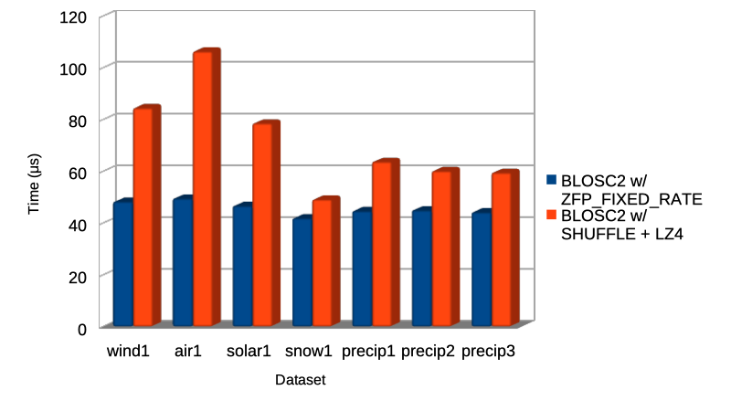

Announcing Support for Lossy ZFP Codec as a Plugin for C-Blosc2
Announcing Support for Lossy ZFP Codec as a Plugin for C-Blosc2
Blosc supports different filters and codecs for compressing data, like e.g. the lossless NDLZ codec and the NDCELL filter. These have been developed explicitly to be used in multidimensional datasets (via Caterva or ironArray Community Edition).
However, a lossy codec like ZFP allows for much better compression ratios at the expense of loosing some precision in floating point data. Moreover, while NDLZ is only available for 2-dim datasets, ZFP can be used up to 4-dim datasets.
How ZFP works?
ZFP partitions datasets into cells of 4^(number of dimensions) values, i.e., 4, 16, 64, or 256 values for 1D, 2D, 3D, and 4D arrays, respectively. Each cell is then (de)compressed independently, and the resulting bit strings are concatenated into a single stream of bits.
Furthermore, ZFP usually truncates each input value either to a fixed number of bits to meet a storage budget or to some variable length needed to meet a chosen error tolerance. For more info on how this works, see zfp overview docs.
ZFP implementation
Similarly to other registered Blosc2 official plugins, this codec is now available at the blosc2/plugins directory of the C-Blosc2 repository. However, as there are different modes for working with ZFP, there are several associated codec IDs (see later).
So, in order to use ZFP, users just have to choose the ID for the desired ZFP mode between the ones listed in blosc2/codecs-registry.h. For more info on how the plugin selection mechanism works, see https://www.blosc.org/posts/registering-plugins/.
ZFP modes
ZFP is a lossy codec, but it still lets the user to choose the degree of the data loss. There are different compression modes:
BLOSC_CODEC_ZFP_FIXED_ACCURACY: The user can choose the absolute error in truncation. For example, if the desired absolute error is 0.01, each value loss must be less than or equal to 0.01. With that, if 23.0567 is a value of the original input, after compressing and decompressing this input with error=0.01, the new value must be between 23.0467 and 23.0667.
BLOSC_CODEC_ZFP_FIXED_PRECISION: The user specifies the maximum number of bit planes encoded during compression (relative error). This is, for each input value, the number of most significant bits that will be encoded.
BLOSC_CODEC_ZFP_FIXED_RATE: The user chooses the size that the compressed cells must have based on the input cell size. For example, if the cell size is 2000 bytes and user chooses ratio=50, the output cell size will be 50% of 2000 = 1000 bytes.
For more info, see: https://github.com/Blosc/c-blosc2/blob/main/plugins/codecs/zfp/README.md
Benchmark: ZFP FIXED-ACCURACY VS FIXED_PRECISION VS FIXED-RATE modes
The dataset used in this benchmark is called precipitation_amount_1hour_Accumulation.zarr and has been fetched from ERA5 database, which provides hourly estimates of a large number of atmospheric, land and oceanic climate variables.
Specifically, the downloaded dataset in Caterva format has this parameters:
ndim = 3
type = float32
shape = [720, 721, 1440]
chunkshape = [128, 128, 256]
blockshape = [16, 32, 64]
The next plots represent the compression results obtained by using the different ZFP modes to compress the already mentioned dataset.
Note: It is important to remark that this is a specific dataset and the codec may perform differently for other ones.
Below the bars it is annotated what parameter is used for each test. For example, for the first column, the different compression modes are setup like this:
FIXED-ACCURACY: for each input value, the absolute error is 10^(-6) = 0.000001.
FIXED-PRECISION: for each input value, only the 20 most significant bits for the mantissa will be encoded.
FIXED-RATE: the size of the output cells is 30% of the input cell size.
Although the FIXED-PRECISION mode does not obtain great results, we see that with the FIXED-ACCURACY mode we do get better performance as the absolute error increases. Similarly, we can see how the FIXED-RATE mode gets the requested ratios, which is cool but, in exchange, the amount of data loss is unknown.
Also, while FIXED-ACCURACY and FIXED-RATE modes consume similar times, the FIXED-PRECISION mode, which seems to have less data loss, also takes longer to compress. Generally speaking we can see how, the more data loss (more data truncation) achieved by a mode, the faster it operates.
"Third partition"
One of the most appealing features of Caterva besides supporting multi-dimensionality is its implementation of a second partition, making slicing more efficient. As one of the distinctive characteristics of ZFP is that it compresses data in independent (and small) cells, we have been toying with the idea of implementing a third partition so that slicing of thin selections or just single-point selection can be made faster.
So, as part of the current ZFP implementation, we have combined the Caterva/Blosc2 partitioning (chunking and blocking) with the independent cell handling of ZFP, allowing to extract single cells within the ZFP streams (blocks in Blosc jargon). Due to the properties and limitations of the different ZFP compression modes, we have been able to implement a sort of "third partition" just for the FIXED-RATE mode when used together with the blosc2_getitem_ctx() function.
Such a combination of the existing partitioning and single cell extraction is useful for selecting more narrowly the data to extract, saving time and memory. As an example, below you can see a comparison of the mean times that it takes to retrieve a bunch of single elements out of different multidimensional arrays from the ERA5 dataset (see above). Here we have used Blosc2 with a regular LZ4 codec compared against the FIXED-RATE mode of the new ZFP codec:
As you can see, using the ZFP codec in FIXED-RATE mode allows for a good improvement in speed (up to more than 2x) for retrieving single elements (or, in general an amount not exceeding the cell size) in comparison with the existing codecs (even the fastest ones, like LZ4) inside Blosc2. As the performance improvement is of the same order than random access time of modern SSDs, we anticipate that this could be a major win in scenarios where random access is important.
If you are curious on how this new functionality performs for your own datasets and computer, you can use/adapt our benchmark code.
Conclusions
The integration of ZFP as a codec plugin will greatly enhance the capabilities of lossy compression inside C-Blosc2. The current ZFP plugin supports different modes; if users want to specify data loss during compression, it is recommended to use the FIXED-ACCURACY or FIXED-PRECISION modes (and most specially the former because of its better compression performance).
However, if the priority is to get specific compression ratios without paying too much attention to the amount of data loss, one should use the FIXED-RATE mode, which let choose the desired compression ratio. This mode also has the advantage that a "third partition" can be used for improving random elements access speed.
This work has been done thanks to a Small Development Grant from the NumFOCUS Foundation, to whom we are very grateful indeed. NumFOCUS is doing a excellent job in sponsoring scientific projects and you can donate to the Blosc project (or many others under the NumFOCUS umbrella) via its donation page.
Comments
Comments powered by Disqus